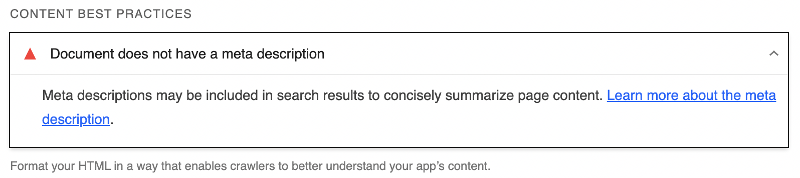
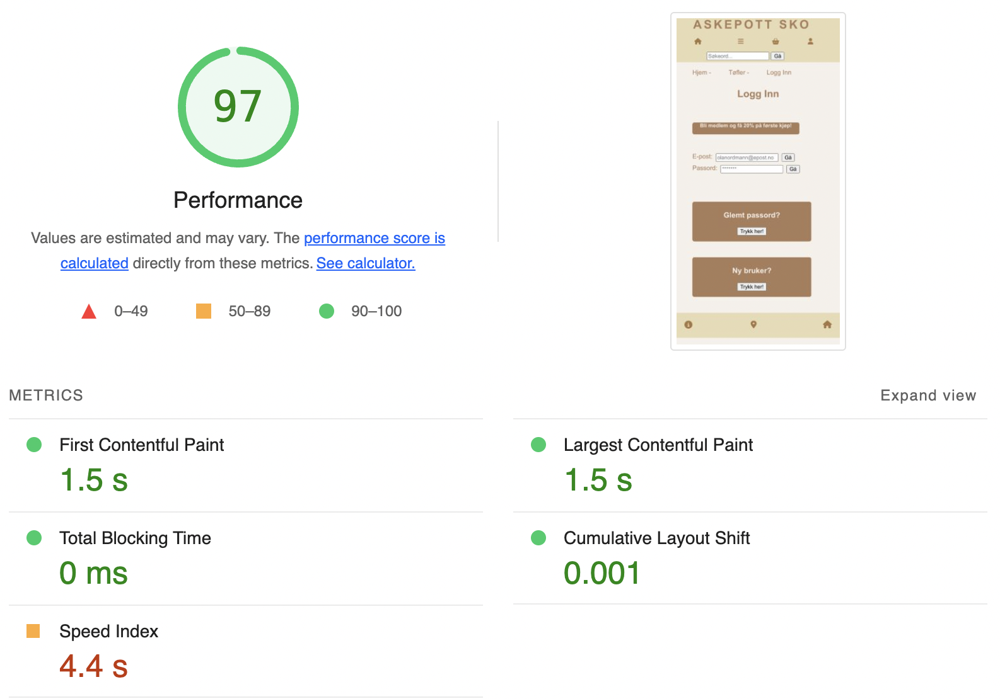

Analyse av nettstedet
1.Google trends - analyse av nøkkelord
Har brukt Google Trends til å foreta en analyse av eksisterende nøkkelord på nettstedet. Ord markert i blå skrift er ord som allerede er brukt på nettstedet. Etter resultatene å bedømme ser jeg at det er hensiktsmessig å skifte ut noen av ordene for å tilpasse nettstedet etter søketrendene som blir brukt i gamle Østfold fylke. Nettbutikken har tilhørighet til dette fylket, og ved å implementere nøkkelord etter geografiske søketrender så vil det forhåpentligvis være med på å generere mer trafikk til nettstedet.
2.SEO - analyse av forside
Forside mobil- Performance
Nedenfor kommer det en oversikt over ting som må rettes:

-
1.Bildene på nettsiden mangler en gitt høyde og bredde. Ved å løse dette vil innholdsflyten oppføre seg bedre.
-
2.1.Lagring av url i nettleseren over lengre tid. Dette vil potensielt være med på at en bruker vil besøke nettstedet flere ganger, hvis jeg har forstått dette riktig.
-
3.Endre format på bilder fra PNG og JPEG til WebP eller AVIF. Dette er moderne formater som er mindre i filstørrelse enn JPEG/PNG og vil gjøre at nettsiden laster inn raskere.
-
4.Bilder på nettsiden bør komprimeres for at lasten skal laste raskere.
-
5.Bildene på nettsiden er ikke responsive, noe som fører til at nettsiden kan laste inn tregere på mobil enn på desktop. Ved å endre på dette vil siden laste inn raskere på mobil.
-
6.Skrive CSS inline i html-dokumentet for at siden skal laste inn raskere. Hvis jeg har forstått dette riktig.
Forside mobil- Accessibility
Nedenfor kommer det en oversikt over ting som må rettes:
-
1.Kontrasten mellom tekstfarge og bakgrunnsfarge på siden er ikke god nok. Ved å endre på dette sikrer man at innholdet blir tydeligere og enklere å lese.
-
2.Linkene på nettsiden mangler beskrivende tekst. Ved å endre på dette sikrer man at brukere som bruker kun tastatur og skjermopplesere kan navigere seg rundt på siden.
-
3.Oversikfter(h1-h6) er ikke plassert i hierarkisk rekkefølge. Ved å endre på dette følger man best practice og man øker tilgjengeligheten til nettsiden.
Har kjørt analyse av forside desktop, får her akkurat samme resultat.
Forside mobil - SEO
Nedenfor kommer det en oversikt over ting som må rettes:
-
1.Mangler metadata. Ved å legge til dette så forbedrer man søkemotoroptimaliseringen til nettsiden.
Har kjørt analyse av forside desktop, får her akkurat samme resultat.
SEO - analyse av produktside
Produktside mobil - Performance
Nedenfor kommer det en oversikt over ting som må rettes:
-
Ser her at feilene på produktsiden er lik som på forsiden. Velger derfor å ikke lage en liste over feil som bør rettes, da den blir lik som listen for forsiden.
Har kjørt analyse av produktsiden for desktop, får her akkurat samme resultat.
Produktside mobil - Accessibility
Nedenfor kommer det en oversikt over ting som må rettes:
-
Ser også her at resultatene er lik som på forsiden. Velger derfor å ikke lage en liste over feil som bør rettes, da den blir lik som listen for forsiden.
Har kjørt analyse av produktsiden for desktop, får her akkurat samme resultat.
Produktside mobil - SEO

Nedenfor kommer det en oversikt over ting som må rettes:

-
1.Mangler metadata. Ved å legge til dette så forbedrer man søkemotoroptimaliseringen til nettsiden.
-
2.Crawlere har ikke tilgang til alle linkene på siden. Ved å linke snarveier riktig, så sørger man for at nettsiden er tilgjengelig for Google sine crawlere. Det kan resultere i at man kommer lengre opp når brukere søker etter ting som er relevant for dette nettstedet.
Har kjørt analyse av produktsiden for desktop, får her akkurat samme resultat.
SEO - analyse av Logginn
Logginn mobil- Performance
Nedenfor kommer det en oversikt over ting som må rettes:

-
1.Lagring av url i nettleseren over lengre tid. Dette vil potensielt være med på at en bruker vil besøke nettstedet flere ganger, hvis jeg har forstått dette riktig.
-
2.Skrive CSS inline i html-dokumentet for at siden skal laste inn raskere. Hvis jeg har forstått dette riktig.
Har kjørt analyse av Logginn for desktop, får her akkurat samme resultat.
Logginn mobil - Accessibility

Nedenfor kommer det en oversikt over ting som må rettes:
-
Ser også her at resultatene er lik som på forsiden. Velger derfor å ikke lage en liste over feil som bør rettes, da den blir lik som listen for forsiden.
Har kjørt analyse av Logginn for desktop, får her akkurat samme resultat.
Logginn mobil - SEO

Nedenfor kommer det en oversikt over ting som må rettes:

Ser også her at resultatene er lik som på forsiden, men med ett unntak:
- 1.Klikkflaten er for liten. Ved å endre på dette så vil siden bli mer brukervennlig.
UU-analyse (Accessibility)
Har brukt WebAIM til å gjennomføre en analyse av nettstedet. Dette gjør jeg for å sjekke nettstedets universelle utforminging og for å sørge for at nettstedet er like tilgjengelig for alle uavhengig av fysiske utfordringer(syn og motorikk). Jeg kommer til å legge ved bilder nedenfor med en forklaring over hva som bør forbedres og hvorfor dette skal gjøres.
UU-analyse forside
-
1.Mangler "label" på form tag som utgjør søkefeltet. Ved å legge til dette vil det være lettere for personer som bruker skjermoppleserverktøy å benytte seg av denne funksjonen.
-
2.Linker som er tomme. Ved å linke opp disse vil navigasjonen på nettstedet bli bedre for alle som bruker den.
3.For lav kontrast mellom tekst og bakgrunnsfarge på nettsiden. Ved å forbedre dette så vil nettsiden være lettere å lese for alle og spesielt for de med synshemninger.
-
4.H-tagger i feil rekkefølge. Ved å rette på dette så følger man krav i forhold til Universell Utforming samt det bidrar til bedre SEO.
-
5.Linker som linker opp til samme html-dokument.
UU-analyse produktside
-
Ser her at jeg får samme alerts/errors som på forsiden, men med et annet antall. Velger derfor å ikke skrive en liste da den blir lik som listen over.
UU-analyse logginn
-
Ser her at jeg får samme alerts/errors som på forsiden, men med et annet antall. Velger derfor å ikke skrive en liste da den blir lik som listen over.
Chat-GPT
Har brukt Chat-GPT til å gjøre en analyse av koden på nettstedet fra et SEO og UU perspektiv.
Forside
Universell utforming

SEO
Produktside
Universell utforming
SEO
Logginn
Universell utforming

SEO
Løsningsforslag og tips fra Chat-GPT:
| Lighthouse | WebAIM | Chat-GPT |
|---|---|---|
| Bilder mangler spesifikk høyde og bredde. | Mangler label-tag. | Mangler nøkkelord. |
| Endre bildeformat fra PNG til WebP eller AVIF. | Tomme linker. De er ikke linket opp til en nettside. | Forbedre title-taggen. Forbedre tekst som står i fanen. |
| Tilpasse bildestr til mobil. | Endre kontrast mellom tekst og bakgrunn. | Legge til strukturell data, anbefalt (Schema.ord markup) |
| Legge til "media-all". | H-tagger ligger ikke i riktig rekkefølge. | Endre kontrast mellom tekst og bakgrunn. |
| Endre kontrast mellom tekst og bakgrunn. | Linker er linket opp til samme nettside. | Mangler label-tag. |
| Ikoner mangler beskrivende tekst. | Mangler beskrivende alt-attributter på bilder. | |
| H-tagger ligger ikke i riktig rekkefølge. | Endre lang-attributtet til "nn" istedet for "en". | |
| Mangler metadata. | H-tagger ligger ikke i rikitg rekkefølge. | |
| Linker er ikke crawl-bare. |
Ser at de tre analysetjenestene reagerer på mye av de samme tingene som f.eks. fargekontrast, manglende metadata,ikoner mangler beskrivende tekst m.m. Det Chat-gpt skiller seg ut på er at den reagerer på at lang-attributtet er på "en" og ikke "nn", dette kommer jeg til å endre.
Forbedrende tiltak og forklarende bilder
- 1.Endret farge på tekst og ikoner på siden til en mørkere farge + endret til en lysere bakgrunnsfarge.
- 2.Linket alle tomme linker på de tre nettsidene opp til forsiden(index.html).
- 3.Lagt til "label" på søkefeltet.
- 4.Lagt til beskrivende tekst til linker på nettsiden(ikoner i header/footer).
- 5.Lagt H-tagger i riktig semantisk rekkefølge.
- 6.Lagt til fast høyde og bredde på bilder for mobil.
- 7.Endret bildeformat på bilder på forsiden og 6 bilder på produktsiden fra png/jpeg til WebP.
Resultater:
Lighthouse forside
Lighthouse produktside
Lighthouse logginn
WebAIM forside
WebAIM produktside
WenAIM logginn
Som illustrert på bildene over så har endringene jeg har gjort hatt god effekt (Se liste over forbedringer lengre opp). Lighthouse analysen av produktsiden og logginn-siden viser en SEO på henholdsvis 83% og 78%. Dette er fordi linker i footeren ikke hadde beskrivende tekst, og at linkene var tomme. Dette har jeg rettet på i etterkant av analysen.
3.Tilgjengelighet-skjermoppleser
Skjermleserverktøyet leste opp alt på nettsiden på norsk, men da den skulle lese opp ikonene i navigasjonen ble dette gjort på engelsk. Hvorfor dette skjedde er jeg noe usikker på, med tanke på at språket i html-dokumentene er satt til "nn". Den tok pause på ca 1-2 sekunder pr. del den leste opp og leste ting noe raskt.Dette er noe man kan justere i instillinger på maskinen. Utover dette så fikk den med seg alt på alle sidene. Ser nå viktigheten i å ha beskrivende alt-attributter på bilder/video man bruker på siden. En annen utfordring var at den leste opp alt i headeren før den kom til hovedinnholdet på nettsiden, dette tok unødvendig lang tid og kan skape irritasjon hos en bruker av dette verktøyet.
3.Tilgjengelighet-Tastaturnavigasjon
Har kjørt en test med navigering av tastatur på nettstedet. Den når tak i alt som er av innhold på siden og man kan navigere seg frem og tilbake, samt kommer man seg videre inn på de andre nettsidene. Jeg lister opp noen utfordringer nedenfor:
-
1.Når man skal bla seg gjennom navigasjonen i header, tekst under bilder og navigasjonen som ligger i footer så må man trykke "tab" 3 ganger før man kommer videre.
2.For å komme til hovedinnholdet på nettsiden må man trykke seg igjennom alt som ligger i header.
3.Det går ikke an å bla seg tilbake til header fra hovedinnhold. Kun mulig å bla seg tilbake i inneværende seksjon. Kan hende dette fungerer, men jeg har ikke vært borti tastaturnavigasjon før nå og har brukt litt tid på å sette meg inn i det.
4.Det går ikke an å bla seg til hovedinnhold fra footer.
5. Etter jeg la til en "Skip to main content"-funksjon fungerer dette noe bedre.
3.ARIA-attributter
Har lagt til relevante ARIA-attributter på alle nettsidene. Har lagt det på ikoner i header/footer, brødsti og søkefelt.
4.Microdata og Rich Results
Har lagt til microdata på brødsmulestien på produktsiden og på det ene produktkortet.
5.META og SoMe
Har lagt inn metadata meta name=description, meta name=author på de tre nettsidene og disse er tilpasset innholdet på siden. Har også lagt inn metadata for FaceBook. Jeg søkte en god del rundt på nettet for å finne metadata for Instagram, men dette fant jeg ikke? Jeg sjekket hva som lå av informasjon på OpenGraph, Twittercards(X) ble nevnt, men fant ikke noe spesifikt for Instagram. Min tanke da er at de bruker samme metadata siden begge plattformene er eid av samme selskap.
Title-taggene er også oppdatert med relevant beskrivelse for hver enkelt nettside.
Nedenfor viser det første bildet hvordan det vil se ut ved en eventuell deling på FaceBook:
Testet også å dele nettsiden via tekstmelding, dette var resultatet: